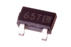

SMD (SOT-23) 2.5v Voltage Regulator 200 mA - VS325D1
Summary
Name: SMD (SOT-23) 2.5v Voltage Regulator 200 mA
ID: VREG-SO23-X-V25D-AE
Hex ID: VS325D1
WebPage: https://github.com/oomlout/oomlout-OOMP/wiki/VREG-SO23-X-V25D-AE
Short URL: http://oom.lt/VS325D1
Revision History: https://github.com/oomlout/oomlout-OOMP/blob/master/parts/VREG-SO23-X-V25D-AE/
| Type |
Size |
Color |
Description |
Index |
VREG
Voltage Regulator |
SO23
SMD (SOT-23) |
X
|
V25D
2.5v |
AE
200 mA |
Images

About
This part is awaiting a description.
Specifications
| Info |
Value |
| Type |
Voltage Regulator |
| Size |
SMD (SOT-23) |
| Description |
2.5v |
| Index |
200 mA |
| Package Marking |
65T |
Extra Details
Spotted a mistake, want to add more? Let us know oomp@oomlout.com
All images and resources are licensed [CC BY-SA] unless otherwise stated (ie. the datasheets)